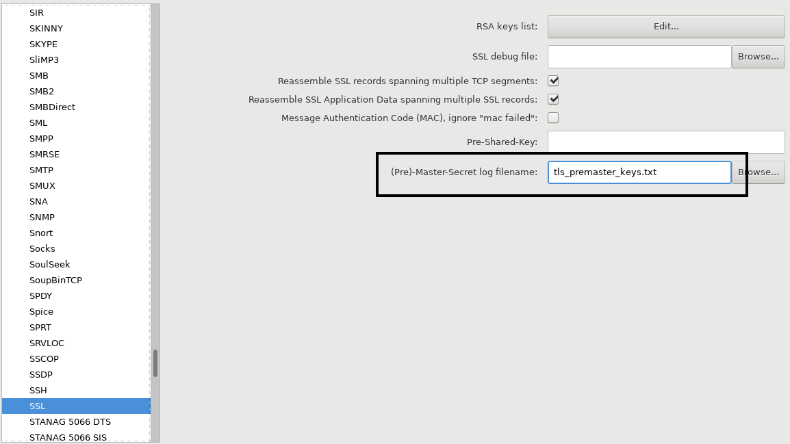

User Guide
Overview¶
- Sipplauncher accepts a path to a test suite, which contains a set of subfolders - tests.
- The Test subfolder should contain at least one SIPp scenario.
- The Test subfolder may contain scripts and other files.
- Scripts and SIPp scenarios may contain references to other UA instance's address in the form
ua[0-9].host. - Tests may be templated using the Template engine.
Test suite folder layout¶
Sipplauncher needs a test suite to run.
Test suite location is passed to Sipplauncher with --testsuite command-line option.
In case if this option is omitted, Sipplauncher uses a test suite, which is located at <current_working_directory>/tmp-testsuite.
To understand the layout required by Sipplauncher, we advise looking at the layout of the embedded mock test suite sipplauncher/tmp-testsuite.
The embedded mock test suite is present for the following purposes:
- demonstrate Sipplauncher test suite layout and features
- test if Sipplauncher works in your environment
- ease development and testing of Sipplauncher
Here is the layout of the embedded mock test suite:
sipplauncher/tmp-testsuite/ ├── normal-0000 │ ├── before.sh │ ├── uac_ua2.xml │ ├── uas_ua0.xml │ └── uas_ua1.xml ├── normal-0001 │ ├── after.sh │ ├── before.sh │ ├── uac_ua1.xml │ └── uas_ua0.xml ├── options-0000 │ └── uac_ua0.xml ├── options-0001 │ ├── uac_ua0.xml │ ├── uac_ua1.xml │ └── uac_ua2.xml ├── TEMPLATES │ └── options.jinja2 └── users.csv
Therefore, a test suite should contain:
Tests¶
A test's name is a subfolder name: normal-0000, normal-0001, etc.
Each test folder contains all the information needed for a test to run:
SIPp scenarios¶
These are files named uac_ua2.xml, uas_ua0.xml, etc.
A scenario file name defines a launch order and role of a SIPp instance. A scenario file name should match one of the regex patterns:
^(ua[cs]+)_(ua[0-9]+).xml$.^([a-zA-Z0-9]+)_(ua[cs]+)_(ua[0-9]+).xml$
A scenario file name contains several parts:
-
^([a-zA-Z0-9]+)optional part.This part defines an ID of a run group, in which the scenario will be run.
This part divides all the scenarios into groups and determines the order of running these groups. Here are the rules:
- Scenarios from the same run group are run concurrently.
- Different run groups are run consecutively, ordered by the run group ID value.
If this part is absent, it's assumed that the scenario's run group ID is "" (empty string).
For example:
normal-0000 ├── uac_ua0.xml └── uas_ua1.xml
Here, it's assumed that all scenarios belong to the same run group ID "". And therefore, all these scenarios are run concurrently.
Here is the example of a more complex Test folder layout:
normal-0001 ├── part0_uac_ua0.xml ├── part0_uas_ua1.xml └── part1_uac_ua0.xml
Here, Sipplauncher will determine 2 run groups:
part0part1
Then, Sipplauncher will run concurrently
part0_uac_ua0.xmlandpart0_uas_ua1.xmland wait for them to finish.If any of these scenarios fail, test execution stops. Otherwise, Sipplauncher then runs
part1_uac_ua0.xml.ua0preserves the same dynamically assigned IP address when running both run groups. -
(ua[cs]+)mandatory part.This part defines the order of launching SIPp instances inside a run group.
uasscenarios are launched beforeuacscenarios. -
ua[0-9]mandatory part.This part defines an
instance nameinside a SIPp instance group.A SIPp instance in a group can refer to other SIPp instances in the same group using
ua[0-9].hostkeywords in its scenario file.For example, we have files named
uac_ua2.xmlanduas_ua0.xmlin a test folder.uac_ua2.xmlmay refer to SIPp instance, which runsuas_ua0.xml, usingua0.hostkeyword.This is possible due to the Dynamic IP address assignment and Keyword replacement. First, dynamic IP addresses are allocated and assigned. Then, the Template engine replaces
ua[0-9].hostkeywords with real IP addresses of SIPp instances.There shouldn't be duplicates of the SIPp
instance namein the same run group. Here are the examples:Duplicate SIPp instance names are disallowed within the same default run group:
normal-0000 ├── uac_ua0.xml └── uas_ua0.xml
Duplicate SIPp instance names are disallowed within the same run group
part0:normal-0001 ├── part0_uac_ua0.xml └── part0_uas_ua0.xml
Duplicate SIPp instance names are allowed within different run groups
part0andpart1:normal-0002 ├── part0_uac_ua0.xml └── part1_uas_ua0.xml
SIPp instance preserves the same dynamically assigned IP address when running both run groups. Therefore, in the above example,
ua0will preserve its IP when running in grouppart0andpart1.
Scripts¶
Files, which have .sh extension, are considered the scripts.
There are 2 predefined script names, which are automatically run by Sipplauncher if present:
before.shis run before running the SIPp instance group.after.shis run after running the SIPp instance group.
These scripts could be used to provision a DUT with some configuration, which is needed for a test to pass.
All other scripts aren't run automatically by Sipplauncher but could be run from elsewhere. For example, from the SIPp scenario.
When preparing a test to run, the keywords inside all test's scripts are replaced.
If before.sh exits with non-zero exit code, a test execution stops.
If either before.sh or after.sh exits with non-zero exit code, the test is considered failed.
Injection file¶
Injection file is passed to Sipplauncher with --sipp-info-file command-line option.
Sippluncher, in turn, passes this file to SIPp with -inf option.
SIPp reads a line from this file per each new call and replaces keywords in a scenario.
In case if this option is omitted, Sipplauncher uses pre-defined location <testsuite_folder>/users.csv.
If there is no file at this location, an injection file isn't used.
In the embedded mock test suite, the injection file is sipplauncher/tmp-testsuite/users.csv.
Templates¶
A template folder contains templates, which could be re-used by Tests to avoid code duplication. A good design pattern is to extract an often-used code of a test into a template and then re-use that template. Template expansion is performed by the Template engine.
A template folder is passed to Sipplauncher with --template-folder command-line option.
In case if this option is omitted, Sipplauncher uses pre-defined location <testsuite_folder>/TEMPLATES.
If there is no folder at this location, templates aren't used.
In the embedded mock test suite, the template folder is sipplauncher/tmp-testsuite/TEMPLATES.
Command-line arguments¶
Run this to see all available arguments:
sipplauncher -h
Mandatory arguments¶
| argument name | argument value | description |
|---|---|---|
| --dut | DUT | Device under test IP address |
| --testsuite | TESTSUITE | Path to a Test suite. Default: <current_working_directory>/tmp-testsuite. |
Optional arguments¶
| argument name | argument value | description |
|---|---|---|
| -h, --help | Show help message and exit | |
| --template-folder | TEMPLATE_FOLDER | Path to a folder with templates. Default: <testsuite>/TEMPLATES. |
| --pattern-exclude | PATTERN_EXCLUDE | Regular expression to exclude tests. If used with --pattern-only arg, and a test name matches both, the test is excluded.Example: --pattern-exclude options --pattern-exclude '.*_dns' --pattern-exclude '.*_tls'. |
| --pattern-only | PATTERN_ONLY | Regular expression to specify the only tests which should be run. If used with --pattern-exclude arg, and a test name matches both, the test is excluded.Example: --pattern-only options --pattern-only '.*_dns' --pattern-only '.*_tls'. |
| --network-mask | NETWORK_MASK | Network mask, which is used for Dynamic IP address assignment. Default: 24. |
| --group | GROUP | Number of SIPp tests to be run at the same time. Default: 1.Please see the example. |
| --group-pause | GROUP_PAUSE | Pause between group executions. Default: 0.8. |
| --group-stop-first-fail | Stops after any test of the group fails. | |
| --random | Selects randomly tests from the test pool (instead of alphabetical consecutive ordering). | |
| --dry-run | Dry run, simulates an execution without actual SIPp scenarios launch. | |
| --fail-expected | OK if the execution fails. | |
| --leave-temp | Don't remove test run folder after the test has finished. By default, a test run folder is removed after the test has finished. |
|
| --keyword-replacement-values | KEYWORD_REPLACEMENT_VALUES | Custom keyword values in JSON object format to be used by the Template engine to replace values in scripts and SIPp scenarios. Example: --keyword-replacement-values '{ "ua1_username": "test1", "ua2_username": "test2", "some_url": "http://10.22.22.24:8080" }'. |
| --no-pcap | Disable capturing to pcap files. | |
| --tls-ca-root-cert | TLS_CA_ROOT_CERT | TLS CA root certificate file (.pem format). It must be used together with tls-ca-root-key arg. |
| --tls-ca-root-key | TLS_CA_ROOT_KEY | TLS CA root key file (.pem format). It must be used together with tls-ca-root-key arg. |
| --sipp-transport | One of: u1, un, ui, t1, tn, l1, ln | SIPp -t param. The default is l1, if TLS usage is auto-detected. Otherwise, it's u1.TLS usage is auto-detected if any tls-related option is used. |
| --sipp-info-file | SIPP_INFO_FILE | SIPp -inf argument.Used to specify an Injection file. |
| --sipp-call-rate | SIPP_CALL_RATE | SIPp -r argument. |
| --sipp-max-calls | SIPP_MAX_CALLS | SIPp -m argument. |
| --sipp-recv-timeout | SIPP_RECV_TIMEOUT | SIPp -recv_timeout argument. |
| --sipp-tls-version | One of: 1.0, 1.1, 1.2 | SIPp -tls_version argument.Please see TLS. |
Common usage examples¶
Run all tests consecutively¶
sipplauncher --dut 10.22.22.24 --testsuite <path_to_testsuite>
Run all tests with concurrent grouping by 3 tests¶
Split all tests into concurrent groups of 3 tests in each group. Next, run all groups consecutively. 3 tests inside a group are run concurrently.
sipplauncher --dut 10.22.22.24 --testsuite <path_to_testsuite> --group 3
Run a single test¶
Let's assume, test suite contains a test named normal-0000.
To run only this test:
sipplauncher --dut 10.22.22.24 --testsuite <path_to_testsuite> --pattern-only normal-0000
Test run folder¶
Before executing a test, Sipplauncher copies its content to a temporary test folder.
Default location of test run folder is /var/tmp/sipplauncher/<test_name>/<test_run_id>.
test_name matches test folder name from Test suite folder layout.
test_run_id is assigned dynamically for each test run and is seen in test result output.
Then Sipplauncher replaces keywords in:
Then Sipplauncher launches SIPp instances in the working directory of a Test run folder.
After the test has finished, Test run folder contains:
- scripts and SIPp scenarios, which were run during the test
- all log files
- generated TLS certificates, private keys and session keys
- pcap file
By default, the Test run folder is deleted after the test has finished.
To change this behavior, please use --leave-temp command-line argument.
Template engine¶
Sipplauncher uses Jinja2 as a template engine. Therefore, you can use Jinja2 syntax when defining scripts and SIPp scenarios. A good example of the approach can be found in the embedded mock test suite.
Templates could be placed either into a Test folder or in the Templates folder. Both these locations are searched when Jinja2 imports a template into a test.
Keyword replacement¶
The Template engine is also responsible for replacing keywords in scripts and SIPp scenarios.
Keywords could be either internal or supplied using --keyword-replacement-values command-line argument.
To define a keyword in script or SIPp scenario, you should use
{ { keyword } }
syntax.
Internal keywords¶
| keyword | desription |
|---|---|
| dut.host | the value, passed via --dut command-line argument. |
| test.name | the Test subfolder name. |
| test.run_id | the Test random run ID. |
| ua[0-9].host | Dynamically assigned IP address for the test's SIPp instance ua[0-9]. |
Dynamic IP address assignment¶
Sipplauncher assigns random IP addresses from a DUT IP network before running each test.
Sipplauncher takes a DUT IP address, which is supplied via --dut command-line argument.
Then it applies a network mask, which is supplied via --network-mask command-line argument, to the DUT IP address.
The result is considered the DUT network.
Then Sipplauncher randomly allocates IP addresses from the DUT network. The allocated address is then checked to be not yet assigned to another machine in the same LAN. Then the address is assigned to a machine, which runs Sipplauncher.
The number of assigned IP addresses corresponds to the number of SIPp scenarios in a test.
After the test has finished, the allocated IP addresses are deleted.
TLS¶
Sipplauncher supports SIP TLS endpoints. For TLS to work on a UAS SIP endpoint, SSL certificate and private key should be provided to a UAS instance. Sipplauncher by default generates ephemeral SSL certificate and private key for each UAS. And launches UAS using this SSL certificate and private key.
However, in this case, security issues regarding using certificates, issued by not-trusted CA, are likely to arise on a DUT UAC side, when the DUT as UAC tries to connect to such a UAS.
To overcome this issue, --tls-ca-root-cert and --tls-ca-root-key Sipplauncher arguments could be handy.
If these arguments were provided, Sipplauncher signs a generated SSL certificate and private key with supplied CA root certificate and private key.
A DUT should be configured to trust this CA.
Then a connection is established without security issues.
The generated SSL certificates and private keys are saved to a Test run folder.
TLS packet exchange is stored in a .pcap file and could be decrypted.
Pcap capturing¶
By default, Sipplauncher captures all packets, which have dynamically assigned IP addresses as either src or dst.
Packet exchange is captured into a .pcap file, which could be opened with the Wireshark application.
Pcap file is named sipp-<test_run_id>.pcap and is stored in a Test run folder.
You can disable Pcap capturing with --no-pcap command-line argument.
Decrypting TLS traffic¶
Usually, it's easy to decrypt SSL packet exchange, if you have SSL private key. However, this is not the case for the Diffie-Hellman encryption algorithm. This algorithm uses per-session dynamic keys.
Sipplauncher helps to decrypt even Diffie-Hellman-encoded packet exchange.
For this, Sipplauncher logs per-session dynamic keys into tls_premaster_keys.txt file in a Test run folder.
Then this file could be used to decrypt the packet exchange in Wireshark.
You can go to Edit → Preferences → Protocols → SSL and choose tls_premaster_keys.txt in (Pre)-Master-Secret log filename field:
Wireshark SSL preferences 
Log files¶
Logging facility is controlled via /usr/local/etc/sipplauncher/sipplauncher.configlog.conf.
By default, Sipplauncher logs to following files:
/tmp/sipplauncher.log- general log file./var/tmp/sipplauncher/<test_name>/<test_run_id>/sipplauncher.log- log, that contains information regarding execution of testtest_name./var/tmp/sipplauncher/<test_name>/<test_run_id>/pysipp.launch.log- log, that contains information regarding running SIPp instances of testtest_name./var/tmp/sipplauncher/<test_name>/<test_run_id>/tls_premaster_keys.txt- log of captured TLS Pre-master keys./var/tmp/sipplauncher/<test_name>/<test_run_id>/ua[0-9]..- varios SIPp scenarioua[0-9]logs, which were produced by SIPp.